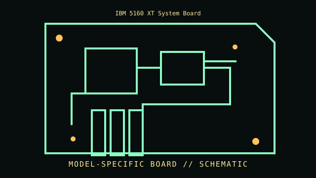

[ INDIVIDUAL COMPONENT // MOTHERBOARDS ]
IBM 5160 XT System Board
IBM PC/XT generation, 1983–1986. This entry documents one exact board model/revision; its specifications are not interchangeable with similarly named variants.

REVISION WARNING: Confirm the PCB silk-screen, assembly/AA code and firmware ID on the actual board. Where documentation does not identify one PCB spin, this record states the exact documented model and explains the revision distinction below.
Specifications
| Exact model / revision | IBM 5160 system board, 64–256 KB board variants; verify assembly number and memory-chip population |
|---|---|
| CPU / socket | Intel 8088 at 4.77 MHz; soldered processor on the planar |
| Chipset / platform | IBM PC/XT custom logic and Intel 8088 bus architecture; no socketed chipset |
| Memory | 64–256 KB DRAM on the planar depending on assembly/chip population; expansion memory commonly supplied by cards |
| Form factor | IBM 5160 steel-chassis planar; proprietary XT mounting, not ATX |
| I/O and expansion | Five 8-bit expansion slots; keyboard, cassette, speaker, power and display interfaces through the system board; display output generally provided by an adapter card |
| Firmware compatibility | IBM XT BIOS ROM and motherboard switch settings; ROM and planar assembly variants matter |
Compatibility and revision pitfalls
The 5160 family includes distinct assembly levels and memory configurations. Do not identify by beige case alone: read the planar assembly/FRU and BIOS ROM labels, inspect switch settings, and distinguish 64/256 KB memory layouts. IBM XT is electrically distinct from the 5150 despite close family resemblance.
Socket fit alone is not proof of support. Confirm the manufacturer CPU support list, the board's minimum BIOS, memory population table, and exact chassis/power requirements before operation.
Preservation notes
Before service photograph IBM assembly and FRU labels, ROM labels, switch positions, socketed DRAM and any bodge wires. Preserve the original option-ROM and BIOS set; document repairs and do not clean off paper labels or date codes.
Record provenance, date/serial codes, board and firmware revision, known repairs and test conditions. Photograph labels and connectors before cleaning or component removal; retain original firmware and configuration data when possible.
Sources & further reading
- IBM Personal Computer XT Technical Reference and 5160 documentation index — PCjs archiveOriginal IBM technical-reference scans and model-specific archival documentation; consult planar parts/assembly lists and switch tables.
- IBM PC/XT 5160 technical reference collection — MinuszerodegreesIndependent preservation archive for IBM 5160 technical references, board identifiers and schematics.
Manufacturer manuals, CPU lists and archived primary documents take precedence over reseller summaries. If an archived support page omits a revision-specific file, do not assume another revision's firmware is compatible.